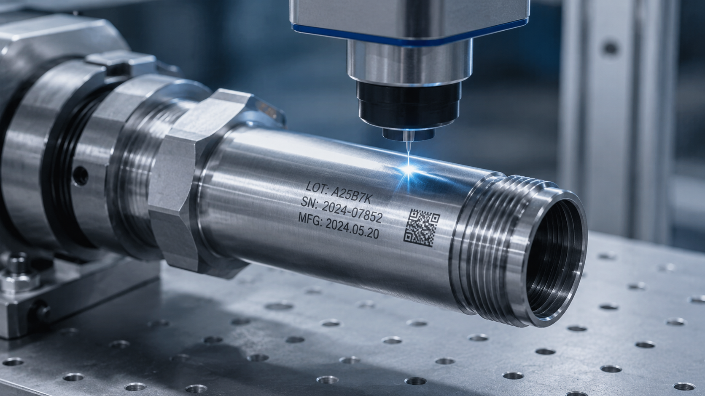
Metal Marking
금속 부품 이력 추적
SUS, Steel, Aluminum 등 금속 부품에 로고, 모델명, LOT, 2D Code, Data Matrix를 안정적으로 마킹합니다.
쿠키혼레이저는 파이버 레이저 마킹기, UV 레이저 마킹기, CO2 레이저 마킹기와 QR·Data Matrix·시리얼 추적 마킹, 비전 검사, 공정 맞춤 자동화 장비를 함께 설계합니다.
금속, 플라스틱, 필름, 유리 등 소재별 조건에 맞춘 선명한 마킹 품질 구현
공급·배출, 비전 위치 보정, 검사, 데이터 연동까지 공정 단위 대응
장비 납품 이후 생산 현장 중심의 유지보수와 문제 해결 지원
레이저 마킹기와 관련 장비 정보를 제품별·용도별로 나누어 필요한 내용을 보다 쉽게 살펴보실 수 있도록 정리했습니다.
레이저 선정, 광학계 구성, 지그·자동화, 비전 보정, 생산 데이터까지 실제 양산 조건에 맞춰 검토합니다.
년 레이저 기술 경험
모회사 기술 이력 기반의 축적된 현장 대응력
공정 맞춤 검토
소재와 생산 조건에 맞춘 레이저 구성 제안
현장 중심 지원
납품 이후 유지보수와 공정 안정화 지원
산업용 레이저가 국내 제조 현장에 본격적으로 적용되기 전부터 축적해 온 경험을 바탕으로, 쿠키혼레이저는 고객 공정에 맞는 레이저 솔루션을 제공합니다.
쿠키혼레이저는 레이저 마킹 장비와 자동화 장비를 현장 조건에 맞춰 설계하고 적용하는 산업용 레이저 전문 기업입니다.
단순한 장비 판매가 아니라 소재, 생산 속도, 마킹 품질, 검사 방식, 유지보수성까지 고려하여 고객에게 실제로 필요한 구성을 제안합니다.
앞으로도 축적된 경험과 빠른 현장 대응을 바탕으로 고객의 생산 공정 안정화에 기여하겠습니다.
주소 경기 화성시 송산면 화성로 316-42
전화 031-355-3164
팩스 031-355-3129
이메일 owen@kooky.co.kr
경기 화성시 송산면 화성로 316-42
아래 버튼을 누르면 카카오맵 또는 네이버지도에서 정확한 위치를 확인할 수 있습니다.
쿠키혼레이저의 주요 장비를 Fiber Laser, UV Laser, CO2 Laser, 맞춤형 장비로 구분해 소개합니다. 제품명을 선택하면 특징, 사양, 도면, 영상 자료를 함께 살펴보실 수 있습니다.
Fiber Laser, UV Laser, CO2 Laser를 중심으로 현장 조건에 맞춘 맞춤형 장비까지 함께 안내드립니다.
작업 방식과 설치 환경에 따라 PRISA, PRISA-E, BPD 제품을 비교해 보실 수 있습니다.
PRISA는 금속 및 다양한 산업 소재에 선명한 마킹 품질을 구현하고, 컴팩트한 설계와 자동화 연동성까지 고려한 쿠키혼레이저의 대표 Fiber Laser 마킹 시스템입니다.
최고의 빔 품질 구현 및 높은 펄스 에너지 확보로 안정적인 생산 효율을 기대할 수 있습니다.
금속 Deep Marking 분야에 적합하며 우수한 빔 품질로 마킹 품질과 양산성을 확보합니다.
검증된 소스를 바탕으로 안정적인 인라인 양산 시스템에 적용하기 좋습니다.
작업 공간을 최소화하면서도 설치와 운용이 편리한 구조로 공간 활용도가 높습니다.
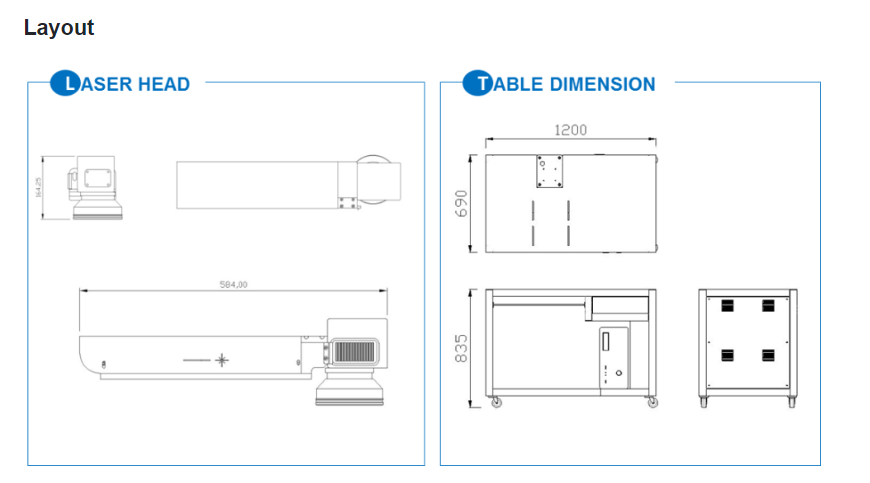
Laser Head와 Table Dimension 도면을 기준으로 설치 공간과 장비 레이아웃을 검토할 수 있습니다.
| 모델 | PRISA |
|---|---|
| Laser source | Ultra Ytterbium Fiber Laser |
| 레이저 헤드 | Single 헤드 구조 |
| 파장 | 1064nm |
| 최대 평균 출력 | 20W / 30W / 50W / 100W |
| 최대 펄스 출력 | 12.5kW |
| 빔 품질(M²) | <1.5 |
| 주파수 | 2~1000kHz |
| Pulse duration | 1ns~350ns |
| 안정성 | 2% (long term 8 hours, rms), 최대 5% |
| 초점거리 | 349mm |
| 마킹 영역(표준) | 180mm × 180mm |
| 마킹 선폭 | 50~150um (내부 빔 조절) |
| 마킹 속도(CPS) | 최대 3000 mm/s (640 CPS) |
| 냉각 방식 | Air Cooling |
| warm-up time | 3분 |
| 가동환경 | 온도 0~40℃, 습도 10~95% (결로가 없을 시) |
| 공급 전원 | 단상 220VAC, 60Hz, 2KVA, 최대 1KW |
로고, 사진, 바코드, QR코드, Data Matrix 등 원하는 마킹을 쉽고 간편하게 구현할 수 있습니다.
화학약품이나 물리적 충격을 사용하지 않으며, 한 번 마킹된 로고나 글씨는 쉽게 변하지 않고 영구적으로 보존됩니다.
탁월하고 안정적인 빔 품질로 정밀한 표현이 요구되는 다양한 분야에 적합합니다.
PRISA-E는 경제성과 효율성을 동시에 고려한 Fiber Laser 마킹 시스템으로, 안정적인 생산성과 우수한 빔 품질, Deep Marking 대응력, 인라인 양산 적용성을 함께 고려한 모델입니다.
가격 경쟁력을 확보하면서도 생산 현장에서 요구되는 마킹 품질과 안정성을 동시에 고려한 구성입니다.
금속 마킹과 깊이감 있는 각인 공정에 적합하며 다양한 산업 마킹 환경에서 활용할 수 있습니다.
검증된 광원 기반으로 자동화 라인 및 연속 생산 공정에 적용하기 좋은 산업용 구조를 갖추고 있습니다.
컴팩트한 설계로 작업 공간을 효율적으로 활용할 수 있으며 설치와 운용이 비교적 편리합니다.
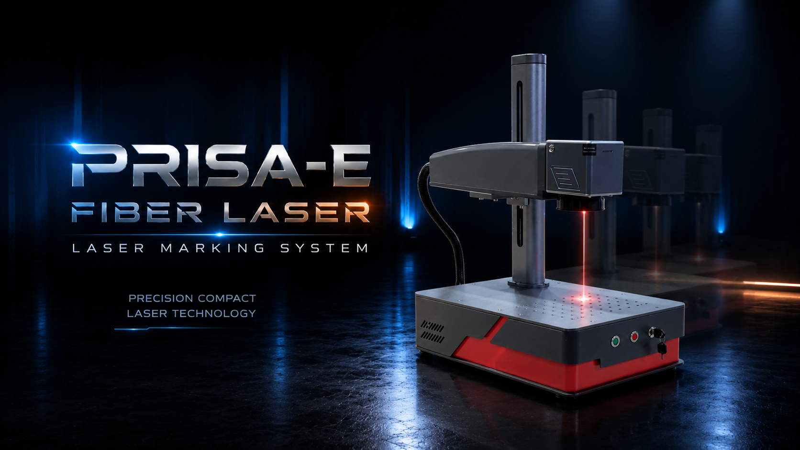
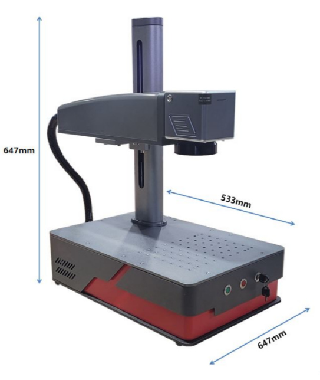
PRISA-E의 외형과 주요 치수, 장비 구성을 확인하실 수 있습니다.
| 모델명 | PRISA-E |
|---|---|
| 최대 출력 | 20W |
| 파장 | 1064nm |
| 편광 | 랜덤 |
| 주파수 | 30~60kHz |
| 파워 안정성 | <3% |
| 빔크기 | 6~8mm |
| 마킹 속도 | 최대 6000 mm/s |
| 레이저 빔(M²) | <1.6 |
| 마킹 영역 | 110 × 110mm |
| 운영체제 | XP, Win7, 8, 10 (32bit, 64bit) |
| 파일형식 | AI, DXF, DST, PLT, BMP, JPG, etc |
| 전원 | AC220 60Hz 단상 |
| 소비전력 | 500W |
| 냉각방식 | 공냉기 |
| 중량 | 30Kg |
| 레이저 수명 | 10만 시간 |
효율적인 장비 구성을 통해 합리적인 비용과 안정적인 생산 운용을 동시에 기대할 수 있습니다.
깊이감 있는 마킹과 선명한 각인을 요구하는 공정에 적합하며 산업용 적용 범위가 넓습니다.
자동화 라인, 컨베이어 공정, 반복 생산 환경에서 활용하기 좋은 구조를 갖추고 있습니다.
BPD는 장수명 광원 구성과 폭넓은 주파수 대응, 고해상도 모션 제어, Customized Beam Delivery를 바탕으로 생산성과 공정 유연성을 높인 Fiber Laser 시스템입니다.
장시간 운용 환경을 고려한 안정적인 구성으로 유지보수 부담을 낮추고 생산라인 활용도를 높입니다.
고해상도 스캔 제어와 빠른 응답성을 기반으로 생산 효율과 정밀한 마킹 품질을 동시에 기대할 수 있습니다.
넓은 주파수 및 펄스 조건 대응으로 다양한 고객 공정과 소재 요구에 유연하게 대응할 수 있습니다.
특수 공정 및 사용자 환경에 맞춘 Beam Delivery 개념으로 응용성을 높일 수 있습니다.
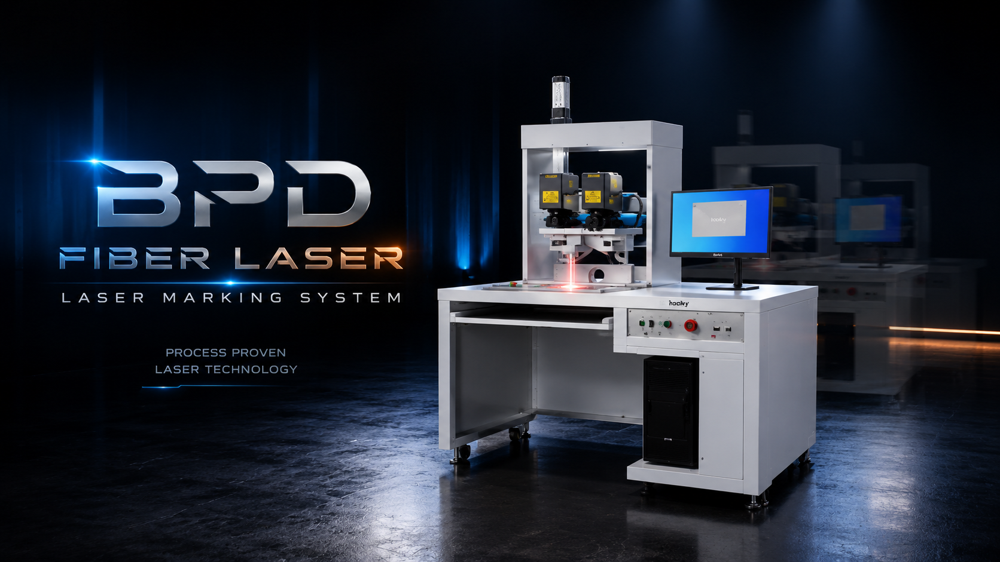
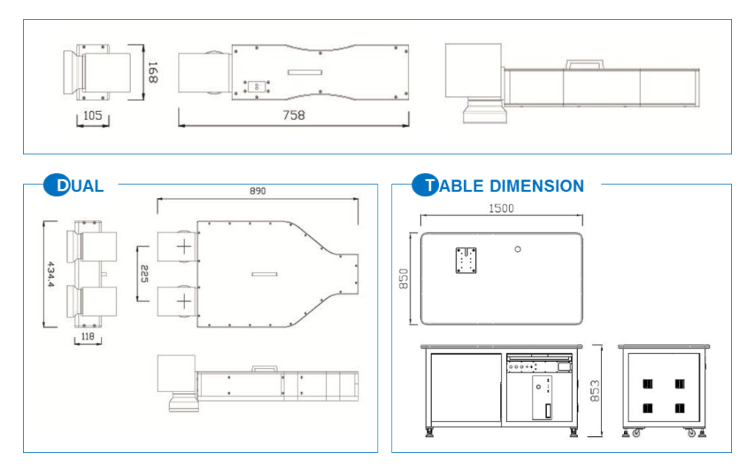
BPD의 레이저 헤드, 듀얼 헤드 구조, 테이블 구성을 확인하실 수 있습니다.
| 모델 | Bleu Prestige Single | Bleu Prestige Duo |
|---|---|---|
| 레이저 매질 | Ultra Ytterbium Fiber Laser | |
| 레이저 헤드 | Single 헤드 구조 | Dual 헤드 구조 |
| 파장 | 1064nm | |
| 최대 평균 출력 | 20W | |
| 최대 펄스 출력 | 12.5kW | |
| 빔 품질(M²) | <1.5 | |
| 주파수 | 2~1000kHz | |
| Pulse duration | 1ns~350ns | |
| 안정성 | 2% (long term 8 hours, rms), 최대 5% | |
| 마킹 선폭 | 50~150um (내부 빔 조절) | |
| 마킹 영역(표준) | 120mm × 120mm, 180mm × 180mm, 230mm × 230mm | |
| 마킹 속도(mm/s) | 최대 3000mm/s | |
| 마킹 속도(CPS) | 1100 characters/sec | 2200 characters/sec |
| 냉각 방식 | Air Cooling | |
| warm-up time | 3분 | |
| 가동환경 | 온도 0~40℃, 습도 10~95% (결로가 없을 시) | |
| 공급 전원 | 단상 220VAC, 60Hz, 2KVA, 최대 1KW | |
빠른 제어 성능과 반복 안정성을 바탕으로 양산 공정에서 높은 생산성을 기대할 수 있습니다.
문자, 로고, 코드, 정밀 패턴 등 고해상도 표현이 필요한 산업 분야에 적합합니다.
다양한 고객 환경과 응용 공정을 고려한 빔 전달 및 세부 조건 확장이 가능합니다.
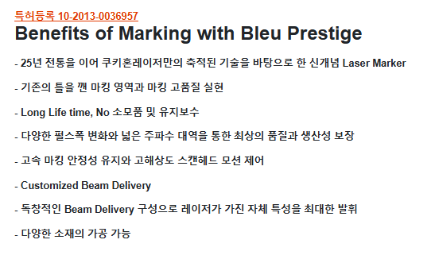
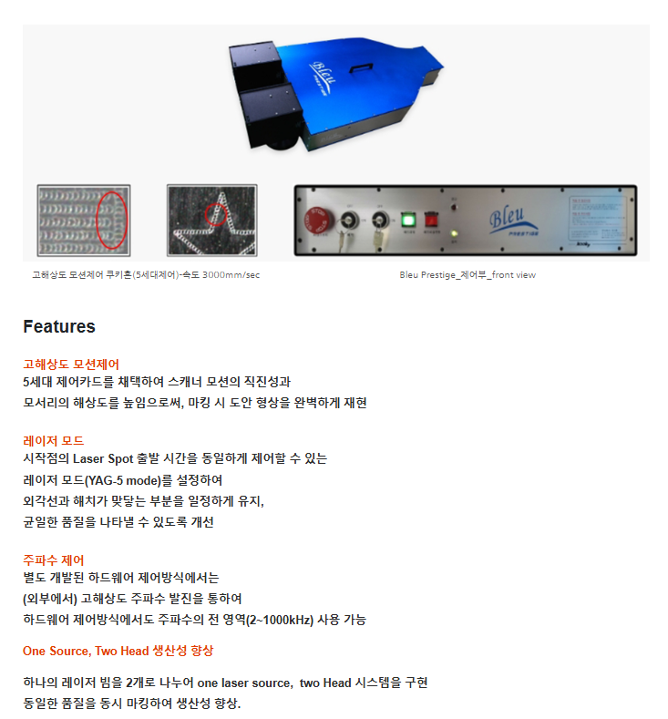
PRISA-UV는 고정밀 미세 마킹에 적합한 UV Laser 시스템으로, Plastic, Crystal, Glass 등 민감한 소재에도 선명한 품질을 구현할 수 있도록 설계된 모델입니다.
정밀 마킹에 적합한 빔 품질로 미세 문자와 고해상도 로고, 섬세한 패턴 구현에 유리합니다.
열 영향이 민감한 소재에도 비교적 정교한 품질을 구현할 수 있어 세밀한 가공에 적합합니다.
자동화 라인 및 정밀 생산 시스템과의 연동을 고려한 장비 구성으로 운용할 수 있습니다.
공간 활용도를 높이는 구조를 바탕으로 정밀 가공 설비에 효율적으로 적용하기 좋습니다.
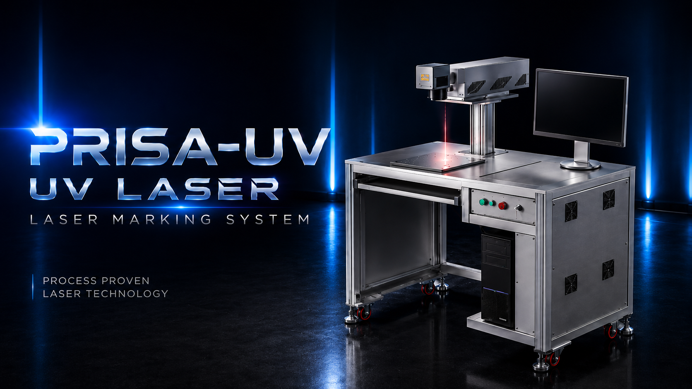
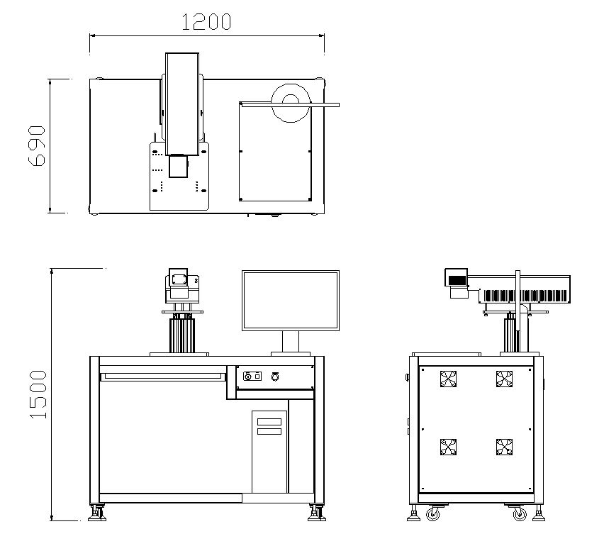
PRISA-UV의 외형 이미지와 주요 장비 구성을 살펴보실 수 있습니다.
| 모델 | Prisa-UV |
|---|---|
| Laser source | UV Laser |
| 레이저 헤드 | Single 헤드 구조 |
| 파장 | 355nm |
| 평균전력 | >5W@60kHz |
| 펄스지속시간 | <10ns@60kHz |
| 빔 품질(M²) | <1.2 |
| 주파수 | 30kHz~200kHz |
| 안정성 | RMS≤3%@24hr |
| 초점거리 | 200~350mm (렌즈별 상이) |
| 마킹 영역(표준) | 50mm × 50mm / 110mm × 110mm / 180mm × 180mm |
| 마킹 선폭 | 35um |
| 마킹 속도(CPS) | 최대 6000 mm/s (6000 CPS) |
| 파일 형식 | AI, DXF, DST, PLT, BMP, JPG, etc |
| 운영체제 | XP, Win7, 8, 10 (32bit, 64bit) |
| 냉각 방식 | Air Cooling |
| 평균 전력소비 | 350W |
| 가동환경 | 온도 0~40℃, 습도 10~95% (결로가 없을 시) |
| 공급 전원 | 단상 220VAC, 60Hz, 1KVA, 최대 1KW |
아주 작은 문자, 정밀 로고, 세밀한 그래픽 등 고해상도 표기가 필요한 제품에 적합합니다.
Plastic, Crystal, Glass 등 열 영향이 민감한 소재에 비교적 안정적인 마킹 품질을 기대할 수 있습니다.
프리미엄 외관과 정밀도가 중요한 전자부품, 의료부품, 소비재 등 다양한 분야에 활용 가능합니다.
PRISA-C는 Plastic 및 다양한 비금속 소재에 적합한 CO2 Laser 시스템으로, 포장재, 소비재 부품, 사출품 등의 표기 공정에 효율적으로 적용할 수 있는 범용 모델입니다.
플라스틱 사출품과 다양한 비금속 제품 표기 공정에 적합한 CO2 Laser 기반 솔루션입니다.
포장재, 용기, 케이스, 라벨류 등 폭넓은 비금속 응용 분야에 활용할 수 있습니다.
연속 생산과 자동화 라인 적용을 고려한 구조로 생산 환경에 유연하게 대응할 수 있습니다.
작업 공간을 효율적으로 활용할 수 있는 구조로 다양한 생산 설비와의 배치를 고려하기 좋습니다.
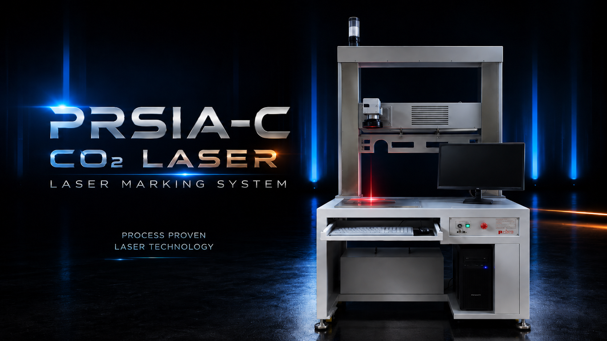
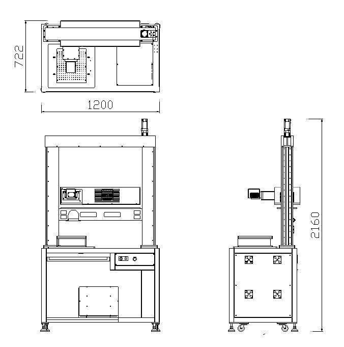
PRISA-C의 외형 이미지와 주요 장비 구성을 살펴보실 수 있습니다.
| 모델 | Prisa |
|---|---|
| Laser source | CO2 Laser |
| 레이저 헤드 | Single 헤드 구조 |
| 파장 | 9300nm / 10600nm |
| 최대 평균 출력 | 30W / 60W / 100W / 200W |
| 빔 품질(M²) | <1.2 |
| 주파수 | 1~200kHz |
| 안정성 | 2%(long term 8 hours, rms), 최대5% |
| 초점거리 | 200~350mm(렌즈별 상이) |
| 마킹 영역(표준) | 50mm x 50mm / 110mm x 110mm /180mm x 180mm |
| 마킹 선폭 | 150um |
| 마킹 속도(CPS) | 최대 3000 mm/s (640 CPS) |
| 냉각 방식 | Air Cooling |
| warm-up time | 3분 |
| 가동환경 | 온도 0~40℃, 습도 10~95% (결로가 없을 시) |
| 공급 전원 | 단상 220VAC, 60Hz, 1KVA, 최대1KW |
플라스틱과 비금속 제품에 적합한 표기 특성으로 폭넓은 소비재 및 산업 부품에 적용할 수 있습니다.
케이스, 포장재, 용기류, 라벨 및 각종 표면 표시 공정에서 활용하기 좋은 구조입니다.
양산 설비와 자동화 라인에 유연하게 대응할 수 있도록 운용성과 설치 편의성을 함께 고려하였습니다.
정규 제품군이 아닌 고객 공정 맞춤형 장비입니다. 아래 장비명을 클릭하면 선택한 장비의 상세 내용만 바로 표시됩니다.

K-VISION CHECK CELL은 레이저 마킹 후 문자, 로고, 코드, 위치, 누락 여부와 마킹 품질을 비전 카메라로 확인하는 맞춤형 검증 장비입니다. 제품 형상과 검사 기준에 맞춰 카메라, 렌즈, 조명, 지그, 안전 커버 구조를 전용 설계합니다.
단순한 표준 모델이 아니라 고객 제품과 검사 항목에 맞춰 제작되는 Customized 군의 한 가지 예시입니다. 마킹 설비 뒤 공정 또는 장비 내부에 검사 구성을 연동하여 불량 유출을 줄이고 품질 확인을 자동화하는 방향으로 구성합니다.
마킹 완료 후 문자, 로고, 코드 상태를 자동 확인합니다.
마킹 위치 편차와 누락 여부를 검사하여 불량을 판정합니다.
카메라, 렌즈, 조명 조건을 제품에 맞게 선정합니다.
녹색 보호 윈도우와 커버형 구조로 작업 안정성을 높입니다.
| 장비 구분 | Customized 맞춤형 비전 검증 장비 |
|---|---|
| 장비 명칭 | K-VISION CHECK CELL |
| 검사 목적 | 레이저 마킹 후 문자, 로고, 코드, 위치, 누락 여부 및 마킹 품질 확인 |
| 검사 방식 | 비전 카메라 + 렌즈 + 조명 + 검사 소프트웨어 기반 양품/불량 판정 |
| 검사 항목 | 문자 확인, 로고 확인, QR/Data Matrix/Barcode 판독, 위치 확인, 누락 검사 |
| 장비 구조 | 안전 커버형 구조, 녹색 보호 윈도우, 전용 스테이지, 작업자 조작부 구성 |
| 맞춤 구성 | 전용 지그, 제품 위치 보정, 조명 조건, 검사 알고리즘, PLC/I/O 연동 |
| 적용 효과 | 마킹 불량 유출 방지, 생산 품질 안정화, 검사 이력 관리 및 자동 판정 지원 |
제품 크기, 소재, 표면 상태, 마킹 위치와 검사할 내용을 확인합니다.
정상/불량 기준, 판독 코드 종류, 위치 허용오차, 누락 조건을 정리합니다.
검사 속도, 자동화 연동, 작업자 투입 방식, 설치 공간을 함께 검토합니다.
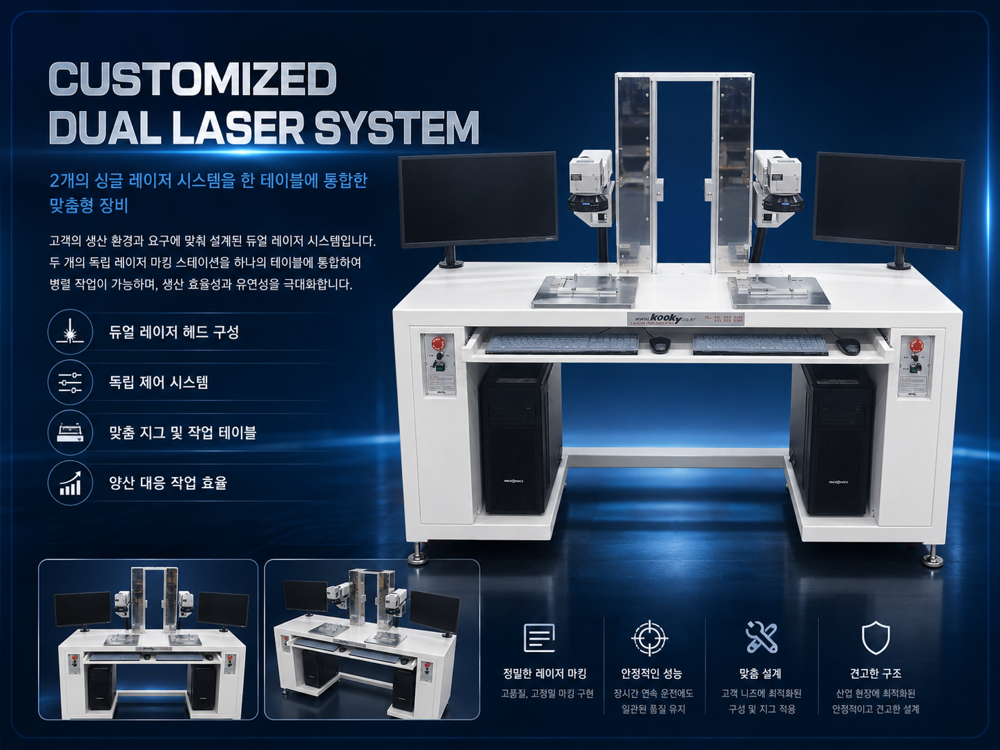
K-DUAL LASER WORKSTATION은 싱글 레이저 시스템 2대를 하나의 작업 테이블에 통합한 맞춤형 레이저 작업 장비입니다. 좌우 독립 레이저 헤드와 작업 영역을 구성하여 두 공정을 동시에 운용하거나, 작업 제품과 공정 조건에 맞춰 병렬 가공할 수 있습니다.
하나의 테이블 위에 좌우 2개의 싱글 레이저 시스템을 배치한 구조입니다. 두 장비를 독립적으로 운용하면서도 작업자 동선과 설치 공간을 줄일 수 있어, 반복 생산이나 좌우 병렬 공정에 적합합니다.
독립 제어 가능한 싱글 레이저 2대를 하나의 테이블에 구성합니다.
좌우 작업 영역을 동시에 운용하여 생산성과 작업 효율을 높입니다.
좌우 스테이션을 분리하여 서로 다른 작업 조건을 적용할 수 있습니다.
제품 크기와 작업 방식에 맞춰 지그, 스테이지, 테이블 구조를 설계합니다.
셋업 시간 단축과 병렬 작업으로 반복 생산 공정에 효율적으로 대응합니다.
| 장비 구분 | Customized 맞춤형 듀얼 싱글 레이저 시스템 |
|---|---|
| 장비 명칭 | K-DUAL LASER WORKSTATION |
| 장비 컨셉 | 싱글 레이저 시스템 2대를 하나의 테이블에 통합한 병렬 작업형 장비 |
| 구성 방식 | 좌우 독립 레이저 헤드, 모니터, 제어부, 작업 스테이지 구성 |
| 작업 방식 | 2개 스테이션 동시 운용 또는 독립 운용 |
| 적용 목적 | 생산성 향상, 작업 공간 절감, 반복 제품의 병렬 레이저 가공 |
| 맞춤 구성 | 제품 전용 지그, 작업 테이블 크기, 안전 커버, 제어 방식, 작업 동선 맞춤 설계 |
| 상담 필요 정보 | 제품 크기, 작업 수량, 레이저 종류, 마킹 위치, 좌우 작업 조건, 설치 공간 |
동일 제품을 좌우에서 동시에 마킹하여 생산 속도를 높이는 공정.
좌우 스테이션을 다른 조건으로 세팅하여 작업 유연성을 확보하는 공정.
두 장비를 별도 배치하기 어려운 현장에서 하나의 통합 테이블로 운용.
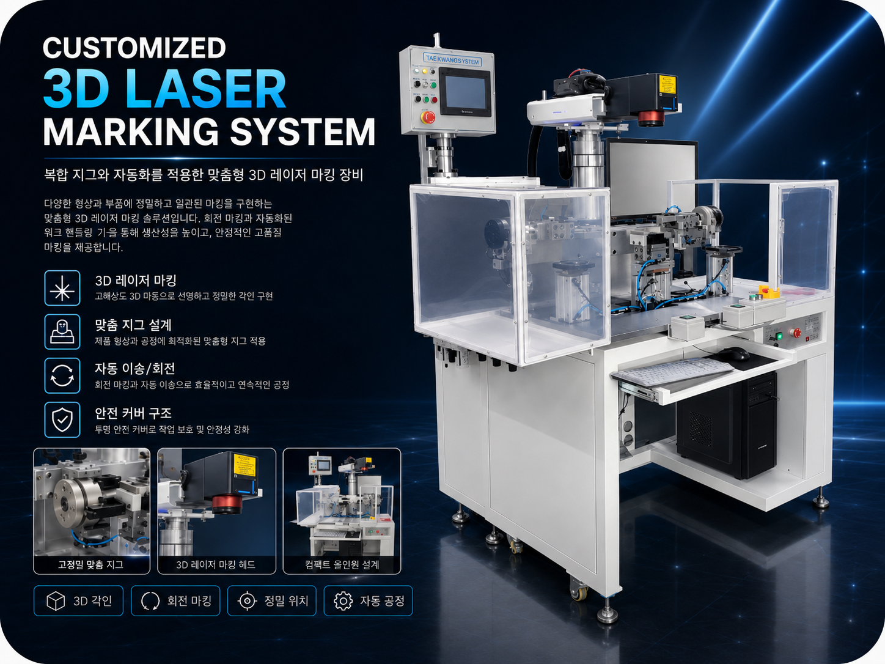
K-3D LASER MARKING SYSTEM은 곡면, 단차, 입체 형상 부품에 대응하기 위한 맞춤형 3D 레이저 마킹 장비입니다. 제품 형상과 생산 공정에 맞춰 3D 레이저 헤드, 정밀 지그, 회전/이송 기구, 안전 커버와 조작부를 일체형으로 구성합니다.
평면 마킹만으로 대응하기 어려운 곡면, 원통형, 단차가 있는 제품에 균일한 마킹 품질을 구현하기 위한 Customized 장비입니다. 작업 제품에 맞춘 고정 지그와 회전/이송 구조를 적용하여 반복 생산과 자동화 공정에 적합하게 구성할 수 있습니다.
곡면, 단차, 입체 형상 제품에도 선명하고 정밀한 마킹을 구현합니다.
제품 형상과 위치 기준에 맞춰 전용 지그와 고정 구조를 설계합니다.
회전 마킹, 자동 이송, 반복 위치결정 등 공정 조건에 맞게 구성합니다.
투명 안전 커버와 작업자 조작부를 적용하여 안정적인 작업 환경을 제공합니다.
| 장비 구분 | Customized 맞춤형 3D 레이저 마킹 시스템 |
|---|---|
| 장비 명칭 | K-3D LASER MARKING SYSTEM |
| 장비 컨셉 | 곡면, 단차, 입체 형상 부품 마킹을 위한 맞춤형 자동 레이저 마킹 장비 |
| 주요 구성 | 3D 레이저 마킹 헤드, 정밀 지그, 회전/이송 기구, 안전 커버, 조작 패널, PC 제어부 |
| 적용 대상 | 곡면 부품, 원통형 부품, 단차가 있는 제품, 전용 지그 고정 제품 |
| 작업 방식 | 3D 초점 보정, 회전 마킹, 자동 이송, 위치 결정 후 반복 마킹 |
| 맞춤 구성 | 제품 형상별 지그, 회전축, 클램프, 안전 커버, 자동화 인터페이스, 검사/판독 옵션 |
| 상담 필요 정보 | 제품 형상, 마킹 위치, 마킹 범위, 생산 수량, 자동화 필요 여부, 설치 공간 |
평면이 아닌 곡면과 높이 차이가 있는 제품에 균일한 마킹 품질을 구현합니다.
원통형 제품이나 회전이 필요한 부품을 정밀하게 고정하고 반복 마킹합니다.
이송, 클램프, 센서, I/O 연동 등 생산 공정에 맞춘 자동화 구성이 가능합니다.

K-VISION MARKING INSPECTION SYSTEM은 제품 위치와 형상을 먼저 비전으로 인식한 뒤, 정밀 레이저 마킹을 수행하고, 마킹 완료 후 다시 비전 검사로 결과를 판정하는 일체형 Customized 자동화 장비입니다. 비전 촬영 → 레이저 마킹 → 마킹 후 비전 검사 흐름을 하나의 시스템 안에서 연동하여 품질 안정화와 공정 자동화를 동시에 지원합니다.
제품 투입 후 비전 카메라가 위치와 방향을 확인하고, 정밀 레이저 마킹을 수행한 다음, 마킹 결과를 다시 촬영하여 문자, 로고, 코드, 품질 상태를 검사하는 공정 통합형 시스템입니다. 작업물, 검사 기준, 치구, 조명, 카메라 배치, 자동 이송 구조까지 고객 공정에 맞추어 설계할 수 있습니다.
제품 위치, 방향, 기준점을 촬영하여 마킹 전 정렬 조건을 확인합니다.
인식된 기준을 바탕으로 문자, 코드, 로고를 정밀하게 마킹합니다.
마킹 결과를 다시 촬영하여 판독, 누락, 위치, 품질 상태를 자동 판정합니다.
치구, 조명, 센서, 소프트웨어, 이송 구조를 공정에 맞추어 일체형으로 설계합니다.
| 장비 구분 | Customized 맞춤형 비전 촬영 + 레이저 마킹 + 비전 검사 시스템 |
|---|---|
| 장비 명칭 | K-VISION MARKING INSPECTION SYSTEM |
| 공정 흐름 | 비전 촬영 → 기준 위치 인식 → 레이저 마킹 → 마킹 후 비전 검사 → 양품/불량 판정 |
| 주요 구성 | 비전 카메라, 렌즈, 조명 모듈, 레이저 마킹 헤드, 검사 스테이지, 제어 소프트웨어, 자동화 구조 |
| 주요 기능 | 위치 보정, 정밀 마킹, 코드/문자 판독, 마킹 품질 확인, 누락/오마킹 검사 |
| 적용 대상 | 자동차 부품, 전장 부품, 금속/플라스틱 제품, 개별 식별이 필요한 산업 부품 |
| 맞춤 구성 | 전용 지그, 제품별 스테이지, 조명 방식, 카메라 배치, 검사 알고리즘, I/O 연동, 이력 관리 |
| 기대 효과 | 마킹 정밀도 향상, 검사 자동화, 불량 유출 방지, 공정 일체화, 품질 데이터 확보 |
시리얼, 로트, QR/Data Matrix, 로고 등 식별 정보가 필요한 제품에 적합합니다.
마킹 직후 검사까지 같은 장비에서 수행해야 하는 자동화 라인에 적합합니다.
비전 판독과 검사 결과를 연계해 품질 이력과 생산 데이터를 관리할 수 있습니다.
실제 생산 현장에서 자주 요구되는 마킹, 코드 추적, 정밀 가공, 자동화 연동 항목을 중심으로 정리했습니다.

SUS, Steel, Aluminum 등 금속 부품에 로고, 모델명, LOT, 2D Code, Data Matrix를 안정적으로 마킹합니다.
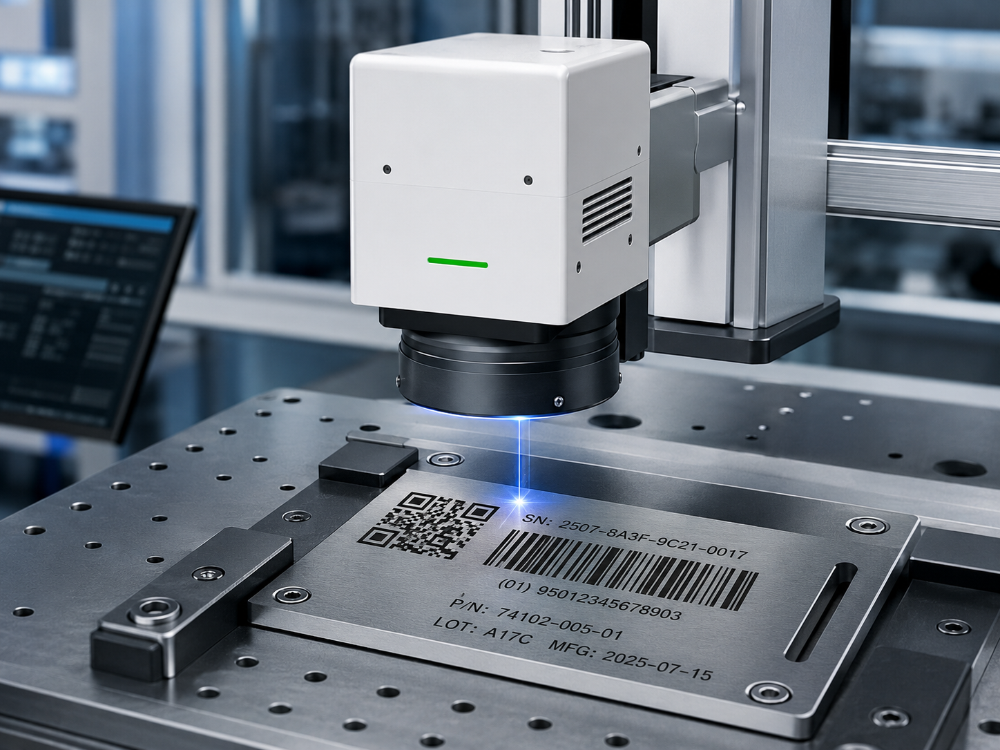
열 영향에 민감한 소재는 UV, 일반 플라스틱과 고무 계열은 CO2 또는 조건에 맞는 레이저를 검토합니다.

제품 추적 관리를 위한 가변 데이터, 날짜, 시리얼, QR, 바코드, Data Matrix 적용을 지원합니다.

위치 보정, 마킹 후 검사, OK/NG 판정, MES 또는 생산 데이터 연동까지 공정 단위로 구성할 수 있습니다.
소재 샘플, 코드 판독, 자동화 연동처럼 실제 상담에서 자주 확인하는 내용을 별도 페이지로 정리했습니다.
상담문의 게시판입니다. 공개 문의는 내용을 볼 수 있으며, 비공개 문의는 작성자와 관리자만 확인할 수 있습니다. 새 문의는 아래 내용입력 버튼을 눌러 남겨주세요.
답변 여부와 관계없이 상담문의가 차례대로 표시됩니다. 비공개 문의는 목록에는 표시되지만 질문내용은 보이지 않습니다.
| 순번 | 접수일 | 닉네임 | 문의내용 | 답변상태 |
|---|---|---|---|---|
| 상담문의 목록을 불러오는 중입니다. | ||||
장비, 소재, 마킹 내용, 생산 조건을 남겨주시면 담당자가 확인 후 답변드립니다. 목록에는 닉네임만 표시됩니다. 비공개로 작성하면 질문내용은 숨김 처리되고 관리자만 확인합니다.
가공 소재, 제품 크기, 마킹 내용, 생산 속도, 자동화 필요 여부를 알려주시면 적합한 구성을 검토하겠습니다.